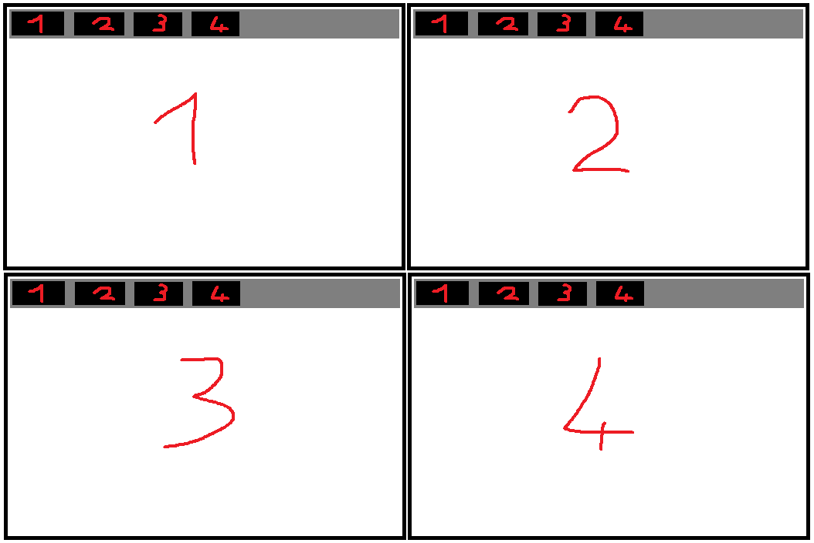
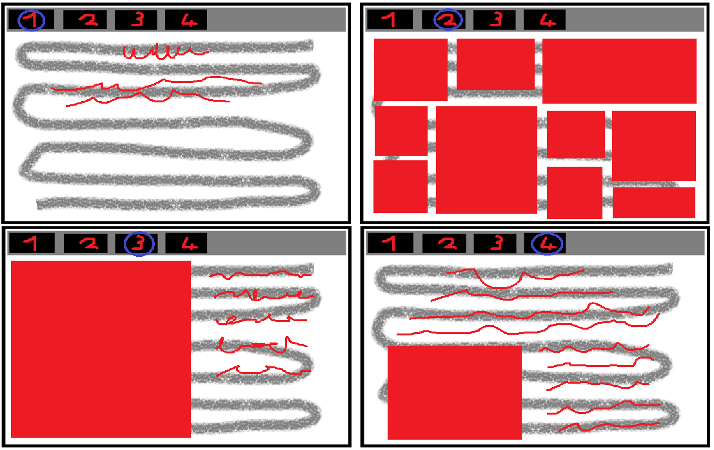

Dokumentáció
Az eredeti terveim azok voltak, hogy egy letisztult, modern hatású honlaot szerettem volna készíteni, mely megfelel a feladat leírásainak, azaz tartalmaz 4 oldalt, melyek között egy menüsávval lehet lépkedni. Összességében úgy érzem, hogy sikerült, ám nem mindent tudtam megvalósítani, legalábbis nem pont úgy, ahogy azt eredetileg szerettem volna.
Az eredeti tervem vázlata:

1:Főoldal
2:Pár szó rólam
3:Képek a motorról
4:Dokumentáció
Illetve ezek voltak az eredeti tervek az egyes oldalak kinézetéhez:

Első oldal
Az első oldalon szerettem volna, hogy szerepeljen a nevem és egy rövid mondatban ismertetni szerettem volna ezen honlap lényegét és mivoltját.
Második oldal
A második oldalon szerettem volna, ha megjelenik egy kép rólam, lehetőleg baloldalon, mellettem pedig le szerettem volna írni az eddigi tanulmányaimat és a főbb hobbijaimat is.
Harmadik oldal
A harmadik oldalra pár általam készített, általam vállalhatónak ítélt képet szerettem volna elhelyezni a motorról valahogy úgy, mint ahogyan a Google képkeresője is kinéz. Itt nem tudtam még, hogy mekkora és hány darab kép lesz, így a tervek eléggé futurisztikusan néznek ki így utólag, de lényegében hasonlít a végeredmény az eredeti elképzeléseimhez.
Negyedik oldal
Az utolsó oldalon, azaz ezen már csak felsorolás szerű dokumentálásra gondoltam. Szerettem volna ezt az oldalt az elején elkészíteni, de ahogy haladtam a többi html írásával, úgy egyre csak bővültek az észrevételeim, így ezeket rendszeresen leírtam ide, azaz ez az oldal nyerte el utoljára a végleges alakját ezen 4 oldal közül.
Nehézségek
Mint azt kicsit feljebb már írtam, az oldalak sorrendjével bajban voltam. Sikerült megcsinálnom a 4 oldal közös részeit, ezt követően össze vissza dolgoztam, pedig szerettem volna egy-egy oldalt véglegesre megírni, de ha az egyik oldalon vagy css-ben változtattam valamit, akkor szinte minden esetben elcsúszott valami egy másik oldalon, vagy szimplán bután nézett ki, így folyamatosan ugráltam az oldalak között azok írása közben. Az sem segített, hogy csomószor elfelejtettem, vagy másik html kódban nyomtam meg a ctrl+s-t, így sokszor nem mentődtek a vátoztatásaim. A vége felé már elég ügyesen mentegettem, de az elején nagy fejtörőt okozott, főleg az első 1-2 ilyen alkalomnál. Hasonlóan amatőr hiba volt az is, hogy valamiért az egyik oldalon midig sokkal nagyobbak voltak a menügombok, és ötletem se volt rá, hogy mitől lehet, már majdnem újból kezdtem az egészet, mikor egyszer csak véletlenül félrenyomtam és minden helyre állt. Röviden az volt a baj, hogy az egyik oldalon belenagyítottam, talán a képeknél, hogy megnézzem jó lesz-e, hogy leköveti-e a képek mérete a lap méretét, és ezt a nagyítást megjegyezte a böngésző, így akárhányszor megnyitottam az oldalt, azt mindig alapból 150%-os nagyításban nyitotta meg. Miután megvolt a menüsorom, nem tudtam rákattintani a gombokra, ezt amúgy még most sem lehet, kizárólag a szövegre való kattintás után lehet megnyitni a másik oldalt. Szerettem volna, hogy az eredeti vázlatokhoz hasonlóan minden szöveg piros színű legyen, de úgy nagyon csúnya volt az összkép, így inkább a fehér betűk mellett döntöttem a sötétszürke háttér miatt, hogy a szöveg jól olvasható legyen. Aminek nagyon örülök, hogy a felső sávot sikerült eltüntetnem, így szerintem sikerült egy kellemesen kinéző platformot létrehoznom. Igazándiból lehetne még rajta rengeteget szépíteni és okosítani, de lehetőségeimhez és képességeimhez képest ennyit tudtam kihozni ebből a feladatból.
Felhasznált oldalak, programok
Tananyag
Segédlet
Színek
Instagram
Kép letöltő
Képek forrása
Zenei támogatás
továbbá: Paint, Google Chrome, Sublime Text